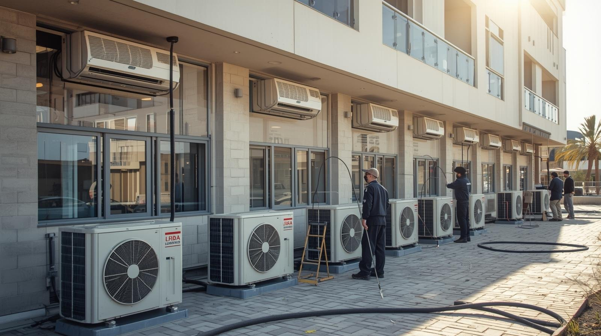

شركة تنظيف مكيفات حي السويدي

مع ارتفاع حرارة الرياض يزداد الاعتماد على أجهزة التكييف بشكل يومي، لكن تراكم الأتربة يقلل من كفاءتها ويزيد استهلاك الكهرباء، وهنا تظهر الحاجة إلى شركة تنظيف مكيفات حي السويدي التي تقدم خدمة احترافية لإعادة المكيف لأفضل أداء، اختيارك لـ شركة تنظيف مكيفات حي السويدي يعني هواء نقي وعمر أطول لجهازك، ومع دعم وخبرة شركة نقل الرياض التي توفر خدمات متكاملة في النقل والتنظيف، ستحصل على تجربة مميزة وموثوقة في كل مرة، تواصل الآن مع شركة نقل الرياض واحصل على خدمة تنظيف لمكيفك تزيد من عمره الافتراضي، للتواصل اضغط على ايقونة الواتس اب.
أفضل شركة تنظيف مكيفات بحي السويدي بالرياض
عندما تبحث عن التميز والخبرة، فإن اختيارك لـ أفضل شركة تنظيف مكيفات حي السويدي بالرياض هو الخطوة الأولى للحفاظ على كفاءة أجهزتك وجودة الهواء داخل منزلك، تعتمد شركة تنظيف مكيفات حي السويدي بالرياض على تقنيات حديثة وطاقم عمل مدرب لضمان خدمة تنظيف دقيقة وآمنة، وهنا يبرز اسم شركة نقل الرياض باعتبارها الشركة الأكثر احترافية وموثوقية في هذا المجال، فهي لا تقدم خدمة تنظيف فقط، بل توفر تجربة متكاملة مبنية على الجودة، الالتزام بالمواعيد، وخدمة عملاء راقية تجعلها الخيار الأول لآلاف العملاء في حي السويدي وجميع أنحاء الرياض.
خدمات تنظيف المكيفات بحي السويدي مع التعقيم الكامل
توفر لك شركة نق الرياض أفضل شركة تنظيف مكيفات حي السويدي خدمات شاملة تضمن أفضل نتائج للتنظيف والتعقيم، ومن أبرز ما تقدمه:
- تنظيف شامل لفلاتر المكيف وإزالة الأتربة المتراكمة.
- تعقيم كامل للوحدات الداخلية والخارجية باستخدام مواد آمنة وصديقة للبيئة.
- فحص وصيانة الأجزاء الداخلية لضمان كفاءة التبريد.
- معالجة الروائح الكريهة الناتجة عن الرطوبة أو تراكم البكتيريا.
- خدمة مخصصة لتعقيم المكيفات في المنازل والمكاتب على حد سواء.
- أسعار تنافسية تناسب جميع العملاء في حي السويدي.
مميزات اختيار شركة تنظيف مكيفات حي السويدي
الاعتماد على شركة تنظيف مكيفات حي السويدي يمنحك مجموعة من المميزات التي تجعلها الخيار الأمثل للحفاظ على أجهزتك:
- تنظيف احترافي باستخدام أدوات وتقنيات حديثة.
- تعقيم شامل يضمن لك هواءً نقيًا وصحيًا.
- فريق متخصص ذو خبرة عالية في جميع أنواع المكيفات.
- أسعار تنافسية وخدمات سريعة في أي وقت تحتاجه.
- إطالة عمر المكيف وتقليل استهلاك الكهرباء.
اختيارك لـ خدمة تنظيف مكيفات حي السويدي من خلال شركة نقل الرياض يعني أنك تتعامل مع شركة رائدة تقدم أعلى مستويات الجودة، وتجمع بين الخبرة والالتزام لتكون الخيار الأفضل لسكان حي السويدي وجميع مناطق الرياض.
أسعار تنظيف المكيفات في حي السويدي بالرياض
تختلف الأسعار حسب نوع المكيف والخدمات المطلوبة، سواء كان تنظيفًا عاديًا أو تعقيمًا كاملًا مع شحن فريون، لكنها تظل مناسبة مقارنة بجودة الخدمة، عند اعتمادك على شركة تنظيف مكيفات حي السويدي فأنت تختار خدمة احترافية تحافظ على كفاءة جهازك وتقلل من استهلاك الكهرباء، وهنا تبرز شركة نقل الرياض كأفضل شركة تقدم هذه الخدمات داخل حي السويدي، بفضل خبرتها الطويلة، أسعارها التنافسية، وفريقها المتخصص الذي يضمن لك نتائج مضمونة وجودة عالية تجعلها الخيار الأول لسكان الرياض.
خطوات تنظيف المكيفات مع الفنيين المتخصصين
يتم العمل داخل شركة تنظيف مكيفات حي السويدي وفق خطوات دقيقة ومنظمة يطبقها الفنيون المتخصصون لضمان أفضل النتائج، وتشمل:
- فصل التيار الكهربائي عن المكيف قبل بدء أي عملية.
- فك الفلاتر الداخلية وتنظيفها جيدًا لإزالة الأتربة المتراكمة.
- غسل الوحدات الداخلية والخارجية باستخدام أدوات آمنة ومواد فعّالة.
- تعقيم شامل للتخلص من البكتيريا والروائح غير المرغوبة.
- فحص المكيف بعد التنظيف والتأكد من عمله بكفاءة عالية.
هذه الخطوات الاحترافية لا يقوم بها إلا خبراء مدربون، وهنا يبرز دور شركة نقل الرياض التي توفر أفضل الفنيين المتخصصين بخبرة طويلة، مما يجعلها الشركة الأكثر ثقة وجودة في حي السويدي وجميع مناطق الرياض.
هل تقدم شركة تنظيف المكيفات صيانة دورية؟
نعم، تقدم شركة تنظيف مكيفات حي السويدي خدمات الصيانة الدورية إلى جانب التنظيف، حيث يقوم الفنيون المتخصصون بفحص شامل للمكيفات والتأكد من سلامة الأجزاء الداخلية، تنظيف الفلاتر، وتعقيم الوحدة لضمان عملها بكفاءة عالية طوال العام. الاعتماد على الصيانة الدورية يحميك من الأعطال المفاجئة ويوفر عليك تكاليف الإصلاح الباهظة، ومع خبرة شركة نقل الرياض التي تُعد من أفضل الشركات المتخصصة في هذا المجال، ستحصل على خدمة متكاملة تشمل التنظيف، التعقيم، والصيانة الدورية بجودة عالية وأسعار تنافسية تجعلها الخيار الأول لسكان حي السويدي.
الفرق بين تنظيف المكيفات العادي والتنظيف العميق
يكمن الفرق الرئيسي بين التنظيف العادي والتنظيف العميق في مستوى الشمولية والتقنيات المستخدمة، التنظيف العادي يركز على إزالة الغبار من الفلاتر الخارجية وبعض الأجزاء السطحية للمكيف، بينما التنظيف العميق يشمل فك الوحدات الداخلية، غسل شامل لجميع المكونات، وتعقيم كامل لإزالة الجراثيم والروائح، اختيار شركة تنظيف مكيفات حي السويدي يوفر لك الخيار المناسب حسب حالة المكيف، ويضمن لك هواءً نقيًا وكفاءة تشغيل عالية، ومع خبرة شركة نقل الرياض، ستستفيد من خدمات احترافية متكاملة تشمل جميع أنواع التنظيف والصيانة، مما يجعلها الخيار الأمثل لجميع سكان حي السويدي الذين يبحثون عن الجودة والاعتمادية، للتواصل مع الشركة اضغط على ايقونة الواتس اب.
نصائح للحفاظ على المكيفات بعد التنظيف
بعد الانتهاء من تنظيف المكيفات، هناك بعض النصائح البسيطة التي تساعدك على الحفاظ على كفاءة الجهاز لفترة أطول:
- تشغيل المكيف بانتظام للحفاظ على دورة الهواء وتحسين التبريد.
- تنظيف الفلاتر الداخلية مرة كل شهر للحفاظ على نظافة الهواء وتقليل تراكم الأتربة.
- تجنب تشغيل المكيف على درجات حرارة منخفضة جدًا لفترات طويلة لتقليل استهلاك الكهرباء.
- إجراء صيانة دورية مع شركة تنظيف مكيفات حي السويدي للتأكد من سلامة جميع الأجزاء الداخلية.
- الاعتماد على خدمات احترافية مثل شركة نقل الرياض التي توفر تنظيفًا وتعقيمًا وصيانة دورية بجودة عالية، مما يضمن أداء ممتاز للمكيف طوال العام.
خدمة تنظيف مكيفات شباك وسبليت بحي السويدي
توفر شركة تنظيف مكيفات حي السويدي خدمات تنظيف شاملة لجميع أنواع المكيفات، سواء كانت مكيفات شباك أو سبليت، باستخدام أحدث الأجهزة ومواد التنظيف الفعالة. تنظيف المكيف يشمل إزالة الغبار والأتربة من الفلاتر، غسل الوحدات الداخلية والخارجية، وتعقيم كامل لضمان هواء نقي وصحي داخل المنزل أو المكتب، الاعتماد على شركة احترافية مثل شركة نقل الرياض يضمن لك خبرة طويلة، دقة في التنفيذ، والالتزام بالمواعيد، مما يجعلها الخيار الأمثل لسكان حي السويدي الذين يبحثون عن جودة وكفاءة عالية في تنظيف المكيفات.
كيف تختار أفضل شركة تنظيف مكيفات بحي السويدي؟
عند البحث عن شركة تنظيف مكيفات حي السويدي، يجب مراعاة عدة عوامل لضمان الحصول على خدمة عالية الجودة:
- الخبرة والاحترافية: اختيار شركة ذات سمعة طيبة وخبرة طويلة في مجال تنظيف المكيفات يضمن لك خدمة متميزة.
- التقنيات والمعدات الحديثة: استخدام أحدث الأدوات والمواد في تنظيف المكيفات يساهم في تحسين كفاءة الجهاز وضمان عمر أطول له.
- الأسعار التنافسية: البحث عن شركة تقدم خدماتها بأسعار مناسبة دون التنازل عن الجودة.
- التعقيم الشامل: الاهتمام بتعقيم المكيفات بعد التنظيف لضمان هواء نقي وصحي.
- خدمة العملاء: وجود فريق دعم متعاون ومتواجد على مدار الساعة لتلبية احتياجات العملاء.
من بين الشركات الرائدة في هذا المجال، تبرز شركة نقل الرياض كأفضل خيار لسكان حي السويدي. تتميز الشركة بفريق فني متخصص ومدرب على أعلى مستوى، وتستخدم أحدث التقنيات في تنظيف وصيانة المكيفات. بالإضافة إلى ذلك، تقدم شركة نقل الرياض أسعارًا تنافسية وخدمة عملاء متميزة، مما يجعلها الخيار الأمثل لكل من يبحث عن جودة واحترافية في خدمات تنظيف المكيفات، للتواصل مع الشركة اضغط على ايقونة الواتس اب.
الأسئلة الشائعة حول شركة تنظيف مكيفات حي السويدي
ما الفرق بين تنظيف المكيف العادي والتنظيف العميق؟
تنظيف المكيف العادي يشمل إزالة الغبار من الفلاتر والأجزاء السطحية، بينما التنظيف العميق يشمل فك الوحدات الداخلية، غسل شامل، وتعقيم كامل لإزالة الجراثيم والروائح. يمكنك الاعتماد على شركة تنظيف مكيفات حي السويدي للحصول على الخيار المناسب حسب حالة المكيف.
هل تقدم الشركة صيانة دورية بعد التنظيف؟
نعم، معظم شركات تنظيف المكيفات تقدم صيانة دورية تشمل فحص الوحدات، تنظيف الفلاتر، والتأكد من كفاءة عمل المكيف، مما يقلل الأعطال المفاجئة، شركة نقل الرياض توفر هذه الخدمة بجودة عالية واحترافية كاملة.
كم يستغرق تنظيف المكيف؟
عادة يستغرق تنظيف المكيفات الشباك حوالي 30‑45 دقيقة، والسبليت حوالي ساعة، مع إمكانية زيادة الوقت في حالة التنظيف العميق أو التعقيم الكامل.